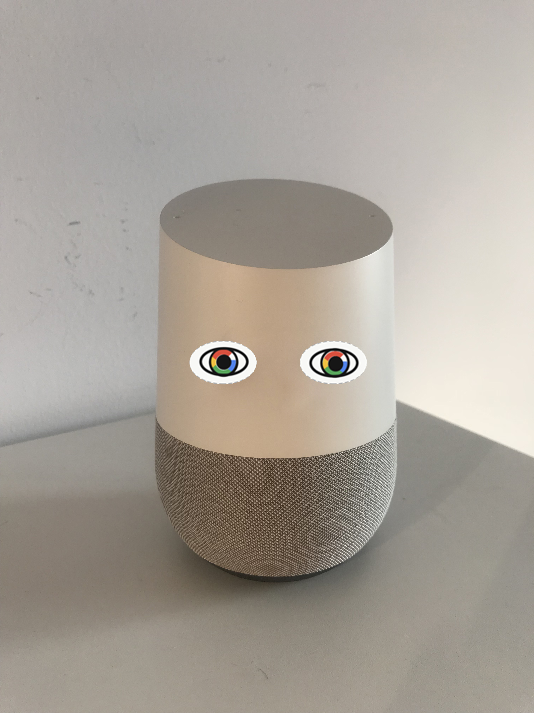

Supplies:
Smart speaker sticker sheets [Download as PDF]
Scissors
These are sticker sheets for users to cut out and affix eyes to their devices which play with differing degrees of realism and brand identity integration. The first, cartoonish eyes, are the most universal and adaptable to different devices. The second set of eyes are slightly more realistic but also incorporate the colors of the four smart speakers' parent companies. The third set of eyes are most realistic, so they use (mostly) normal human eye colors.
Involving the user in cutting out and placing the eye stickers as part of the DIY aspect of these critical designs also ensures that they are personally invested in the design and this participatory action will also make the design more effective.
Critical Design Intervention 2: Smart Speaker Sticker Sheets
